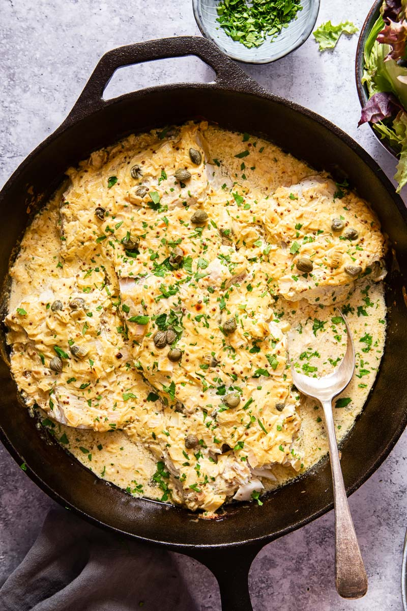

Baked Cod with mustard sauce

Description
If you are looking for a new fish recipe, you must try my cod with mustard sauce!
Cod filets are smothered in a mixture of sour cream and two types of mustard,
then baked in the oven till done.
Juicy and flavourful. Even non-fish lovers will appreciate it!
Ingredients
- 4-6 cod pieces ~ 700g
- salt and pepper to taste
- sour cream - 200g
- 3 tbsp Dijon mustard
- 1 tbsp whole-grain mustard
- 1 leek white part only, minced
- 1 tbsp drained capers
- 1 tbsp fresh parsley
Steps
- Preheat oven to 210C.
- Butter a skiller or a shallow baking dish and arrange cod on it.
Sprinkle with salt and pepper. Mix sour cream or creme fraiche,
both mustards, chopped leek and capers in a medium bowl.
Spoon the sauce over the fish, it should be covered in an even layer of sauce.
- Roast in the oven for 10-12 minutes.
Change your oven setting to broil/grill and continue cooking for 2-3
more minutes until the sauce is slightly blistered.
Sprinkle with fresh parsley and serve.
Notes
Fish goes so well with rice, potatoes or cauliflower rice if you are going low carb. The mustard sauce in this recipe is ideal for flavouring your side as well.
Nutrition